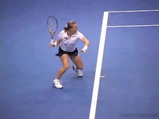
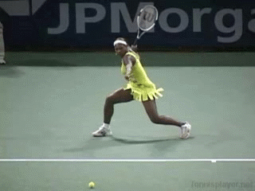
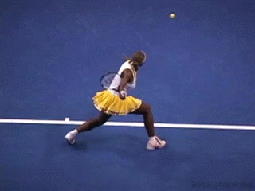
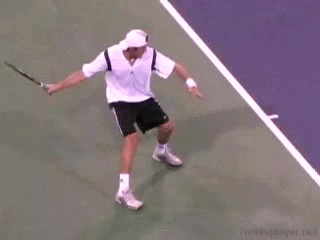
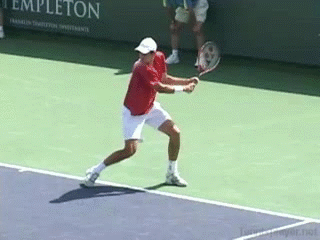
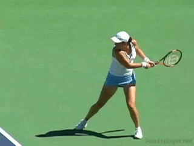

Contact Moves: The Pivot Moves¶
David Bailey

Pivot Moves: players keep one or both feet on the ground.
The Contact Move is a concept I created that finally allows players and coaches to make sense of the complex and at times bewildering combinations of steps and footwork patterns at the highest levels of the game.
These include the out steps, the steps to the ball and the hitting stances, the movement of the feet and legs during the hit, the balance moves after the hit, and also, the recovery steps.
There are almost 20 different Contact Moves in pro tennis. They fall into 3 general categories. These are: Aggressive, Neutral and Defensive. We've previously looked at the Aggressive Contact Moves, and also, the first series of neutral moves, called the Spin Moves. (Click Here.)
Now let's continue our analysis by looking a second series of neutral moves, called the Pivot Moves. These are Contact Moves in which players keep one or both feet on the ground. Like the Spin Moves, Pivot Moves are used to stay in rallies and/or neutralize fast, deep shots. In some circumstances they also give players the chance to counterattack.

The Two Foot Pivot: both feet on the court, rotating after the contact.
Players use Pivot Moves on relatively low, hard-hit balls, and also, when they are hitting half volleys or hitting the ball on the rise. Typically, this is when they are around the baseline and are forced at least somewhat by time.
With the amount of body rotation in the swings in the modern game, pivot moves are critical to allow the players to flow through their strokes when they strike the ball with one or two feet on the ground.
Two Foot Pivot
The Two Foot Pivot is used on the forehand and the two-handed backhand, and is hit from an open or semi-open stance.
Often players use the Two Foot Pivot when the ball is hit directly at them. In this case the preparation or the turn move can be a small out step or simply a turn with both feet turning sideways from the split step. On these balls, the shot can be hit with an extreme open stance, as there is usually not time to further adjust the feet.
As the player swings, both feet keep in contact with the court, but pivot or rotate on the court surface. This rotation corresponds to the rotation of the body.

Pivot moves are essential with the increases in body rotation in the modern game.
In the modern game the rear or hitting shoulder often comes around so that it is facing toward the opponent at the completion of the follow-through. The Two Foot Pivot allows the player to rotate the body fully through the shot without leaving the court surface. Rather than block the natural movement of the torso, the feet pivot, allowing the player to hit with power and also spin. It may also help prevent injury.
The feet can pivot about 90 degrees up to a full 180 degrees, going from pointing at one sideline to pointing at the other. If the feet did not pivot in this fashion, it would put stress on the joints as the torso twisted against the legs. Players who don't pivot through these shots are not only blocking their natural power, they are possibly increasing the risk of injuries in the knees, hips, and or ankles.
When using the two-foot pivot the player stays low and keeps the angles in the legs through the shot. In the set up, the knees are bent at a 45 degree angle or more. During the swing, the legs uncoil and partially straighten. But during the follow-through the player drops the knees down again for balance.
One Foot Pivot
Typically, you see the Two Foot Pivot in the women's game on both the forehand and backhand side. This is because the ball is not hit with as much as spin and is not as high bouncing, compared to the men's game. In the men's game, the Two Foot Pivot is rarer, and the One Foot Pivot is much more common.

The One Foot Pivot: the outside foot stays on the court, rotating after contact.
When players use the One Foot Pivot, they are again dealing with hard hit balls near the baseline and working to stay in rallies and/or counterattack off the ground. But typically, the ball is coming up higher off the court due to the arcing trajectory of the shots and heavier topspin. The contact height on these balls makes it difficult to keep both feet on the ground but is not yet high enough that the players must leave the court entirely.
On these balls, the players pivot on the outside foot, but raise the opposite leg and the opposite foot upwards into the air as they rotate through the shot. This allows players to create a higher contact point without going completely airborne.
The One Foot Pivot is also hit with an open stance. Like the Two Foot Pivot, the stance can be quite extreme. But it is commonly semi-open. As the player starts the forward swing, the left or opposite foot comes off the court with the knee bend reaching 45 degrees.
The timing of the pivot is very important. The pivot move, or the rotation or the outside foot, starts after the contact, and moves in concert with the rotation of the shoulders and hips. Again, depending on the ball, the feet can pivot until they face the net, or continue further until they point at the opposite sideline.

Players sometimes use a One Foot Pivot when they hit the two-hander open stance.
When the player goes down the line with the One Foot Pivot, the push off for the recovery is usually with the outside foot back toward the middle. When going crosscourt, however, the front foot will continue to rotate and land slightly further back in the court. Now the first recovery step is a push back to the middle with this foot.
Two-Handed Backhand
Although it is more much more common on the forehand, you will also see the One Foot Pivot used on the two-handed backhand. This can happen when players hit open stance. Again, it's typically when the ball is hit hard, deep and not especially high.
The sequence is similar to the forehand. The player sets up in an open stance. As the swing starts, the player lifts the front leg off the court, bending at the knee.
As with the forehand, this allows the player to raise the contact point somewhat without having to leave the court completely. The rear foot then pivots through the shot after the contact, corresponding to the rotation of the shoulders and hips.

Less body rotation on the two-hander means less rotation of the pivot foot.
Because the amount of torso rotation on the two-hander is less on the forward swing compared to the forehand, the rotation of the outside foot is usually also less. Typically, the outside foot will rotate 90 degrees, or until it points forward at the net.
Depending on where the shot is hit, the recovery steps can begin with a push from either foot back toward the middle. Typically, this push will be with the outside foot if the player has hit down the line. On a crosscourt, however the front foot will often land further from the net as the player rotates through the shot. In this case, the front foot begins the recovery sequence with the push back toward the middle.
So that's it for the Pivot Moves! Stay tuned for the next article which will start our analysis of the Defensive Contact Moves.

David Bailey is a native Australian who has spent 15 years studying tennis at the professional level. He has developed a new language for one of the most complex and misunderstood aspects of the game, footwork and court movement. David has worked with world class players and coaches, national tennis associations and top academies, and has presented at coaching seminars around the world. His teaching system, the Bailey Method, has become a regular part of the coaching curriculum at the Nick Bollettierri Tennis Academy, where it is personally endorsed by Nick
Visit David’s Website! Click Here!
To Contact David directly Click Here!
Dave Bailey Video Lessons & Transcripts
Full Illustrated Article: Golden Move #8: Two Foot Pivot · Golden Move #9: One Foot Pivot · Golden Move #10: Closed Backhand Pivot
10. Lesson 1 Simple Grounded Pivots
Video Transcript
Okay, let's have a look at lesson one. We're going to put together the simplest footwork that I know. And that is grounded footwork and just some simple pivoting of the legs. I wanted to start doing shadow tennis cuz I think it's a really good way for you to practice at home and for you to get the concept of all the different footwork. I'm going to start off though showing you how to find a base and I'm going to use these discs because it's so important.
It's very common that people forget to get their feet nice and wide. So, what I like to do is put the feet together. You turn your foot to the side and then straighten up. Turn this foot to the side, straighten up. Now, that's shoulder width. We need to be double shoulder width. So, we go 45. Straighten the foot, 45 and straighten the foot. Now, we've got a really nice wide base and I like to use the dots to remind you to keep it wide.
And also, we're going to use different colors for the different types of lessons as they get progressively more complex. So, we're going to put here. So, we've got a nice wide base. So, we keep our base the same. The other thing is to then get up on the toes, which is the first star, which is getting ready. And to me, this is personal preference. You either can bounce. You can twist. Or you can push off side to side. Whatever feels comfortable for you, but I think it's really important to I'm going to show you again.
There's a twist, there's a bounce and there's lateral pushes. Whatever feels comfy, but it's very important that you do that so you get up on your toes and it will also keep your base nice and wide. So, that's the first thing we're going to do is is actually bring that in. Now, I'm going to turn my back to you cuz I feel like if you're doing shadow tennis and you're doing this at home, it's going to be a lot easier for you to follow when I have my back to you.
And we're going to do five different progressions, the five simplest foot works that we can do. But we're going to look at the five hours, which is getting ready, reading and turning, reacting, and then responding with a move, a contact move, and then recovering. So let's do number one. Okay, here we going to have a look at number one, which is the the forehand low step out. We start up on our toes. I like to use two steps for myself. Then we split nice and low, we stick our bottom back for balance, and then we turn to the forehand.
Then we take two steps forward, so we move to the ball, two steps forward. We hit a step down, we pivot the back foot, bring the leg through for balance, and push back, and we do it twice. So ready steps, split, turn, shuffle forward, step down, swing, bring the leg slightly through, and then finish. Let's have a look at number two. Ready to Now we're going to do the backhand low step down. So we're twisting, split, we take the racket back with our feet.
We take two steps forward, we step in, we drop the back knee, bring the leg through, and come back, and split. Number three is what I call a two-foot pivot. So the ball's coming faster to me. So do ready steps, split, I turn, I hit this through the middle, a two-foot pivot, and I drop my knee and point the elbow at the target. Let's do that again. So we do it twice. So split, turn, two-foot pivot. Number four is the shift two-foot pivot.
So it's coming at my body, and I'm going to shift out of the way cuz it's coming fast. So split, turn, shift to the side, replace the feet, drop the back knee, two-foot pivot, and recover. Let's do it again. Split, turn, shift to the side, drop the knee, hit it straight, then come back. The final one is the closed backhand. So I split, I turn, I just take one big step across, drop the back knee, finish the swing, then come back and do my ready steps again, split, turn, close back hand, drop the knee, come back and split.
Now, let's put it all together as one. So, split, turn, forehand step down, drop the knee, come back, split, turn, backhand low step down, drop the knee, bring the leg through, come back, two-foot pivot through the middle, shift two-foot pivot through the middle, and then the close backhand. Let's repeat it one more time. Split, turn, low step down, come back, turn, low step down backhand, split, two-foot pivot through the middle, split, turn, shift two-foot pivot through the middle, and finish off with the close backhand.
And split. That is the simple pivots. Good luck with it. Okay, cadence, let's have a look at level one. The forehand low step down, the backhand low step down, the forehand two-foot pivot, the shift two-foot pivot, and the black backhand close. Let's start off with the forehand step down crosscourt. Stay low. Then the backhand, really pivot that back leg. Then the two-foot pivot through the middle. Great. And then the shift, shift to the side, two-foot pivot through the middle. Then the backhand close, drop the knee, stay low.
Good, come back and split. That was perfect.
24. Lesson 8 Simple 1-Legged, 1-Foot Pivot Moves
Video Transcript
So now we've moved on to level two lesson eight. So here we go with the one-foot pivots where we're getting that elbow high and pivoting that foot back foot and hitting in different directions. So split, shuffle back one-foot pivot down the line knee up to the chest. Get the elbow high. Split, let's repeat that down the line turn the foot in the direction down the line. Ready step split, go back pivot the foot bring the leg around reverse pivot and come back.
So I'm pulling the leg cross court. Split, pulling the leg up getting the hips facing the target. Then we're going to do the run around. So we split, we run around hit the one-foot pivot down the line. And again ready steps split one-foot pivot down the line. Now we're going to move a bit further back. So we split, we're going to cross back go deeper again cross court pull the leg around push off that leg and back, bring the knee up reverse pivot push off the leg and then recover.
Okay, let's put that into a one-foot pivot combination. So split, go back one-foot pivot down the line knee up. Split, shuffle back pull the leg around reverse pivot cross court. Split, run around bring the knee up hook it down the line and then split cross back on the deeper ball leg up cross court heavy getting that elbow high. Again split one-foot pivot down the line split reverse pivot cross court split run around down the line reverse pivot and then a reverse pivot where we move back, lift the leg up come back and split.
Okay, one-foot pivot down the line really pivot that foot knee up. One-foot pivot cross court pull the leg around. Okay, run around inside out get around load that back foot knee up inside out good and then move back on this one. Move back hit it heavy pivot the foot come back in and split. Excellent. >> [music]
19. Lesson 3 Advanced Grounded Pivots and Basic Grounded Slicing Pivots
Video Transcript
So now let's have a look at lesson three, which is furthermore complex or furthermore advanced pivoting moves where we're still keeping our feet on the ground. But what we're going to do is introduce a slice, which is a little bit more advanced, and also moving further out to the ball where we're going to cross out to the ball and do what I do do what I call cross two three steps. So number one is the turn two three semi-open two-foot pivot down the line.
So we split, we turn, we step across semi-open, pivot the foot, drop the knee, and just shuffle back. So let's do that again. Split, turn, step out, step back, pivot the foot, then shuffle back. The next one is just going to be a rhythmical slice. So we turn, we're going to rhythm with this outside foot first. So rhythm across, slice, and bend the knee. So again, turn, move with the outside first, rhythm, and slice, drop the back knee for balance. Then a karaoke slice, which is more down the line.
So we split, we turn, we shuffle forward, we put the foot in behind and cut across with a karaoke slice. So split, turn, still grounded, put the foot in behind, and curl it down the line. Again, the next one is is going to be a closed backhand. So we split, we turn, we cross, balance, close stance, swing, touch the back. Swing the leg around, take the weight under this foot, drop the foot, and cross over. So let's try that again. Closed, one two three, drop the knee, finish the swing, bring the leg through for balance, drop the foot under and come back.
Let's do that with a slice. Same footwork. Turn early, one two three, slice, squeeze the shoulder blades, stretch out onto the outside foot, cross over, cross back, turn, 1 2 3 slice. Bring the leg around. Drop step crossover and finish. Okay, let's put lesson three together. We will put it as a sequence. So, split, turn. Super pivot with split rhythm. Slice. Split. Come forward. Foot in behind karaoke slice. Split. Cross 2 3 two hands. Drop the knee. Bring the leg through cross back.
Split. 1 2 3 slice it. Bring the leg around cross back. 1 2 3 pivot. Good. Okay. Rhythm slice. Stay low. Nice. Karaoke slice down the line foot in behind. Close slice. Bring leg around cross back. Good. And then close back and two hands. Come across. Hit it two hands. Bring the leg around. Come back and split. [music] Perfect. >> [music] [music]
← Previous | Footwork Home | Next →